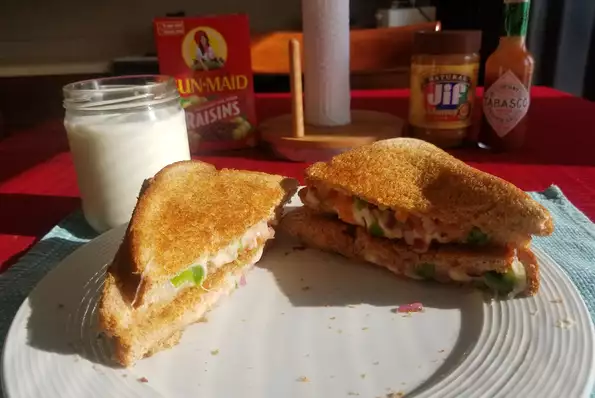

Cheese Sandwich

Grilled cheese with onions, tomatoes and jalapenos-- tastier than the original!
Ingredients
- 2 tablespoons butter or margarine
- 4 slices white bread
- 2 slices American cheese
Steps
- Heat a large skillet over low heat
- pread butter or margarine onto one side of two slices of bread
- Place both pieces buttered side down in the skillet